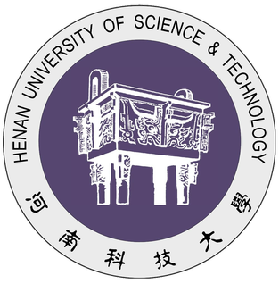

I’m Sihan Shao, a master’s student at Zhejiang University. I earned my bachelor’s degree at Henan University of Science and Technology, where I ranked 1st by GPA in my cohort of 160. I entered Zhejiang University through its recommendation-based admissions process, which waived the graduate entrance exam. My research focuses on large language model (LLM) agents and multimodal emotion understanding. I’m outgoing and have a wide range of interests outside research. I enjoy playing basketball and can also play the piano.
Our paper FEMA was accepted to IJCNN 2025 (CCF-C)!
Master of Engineering in Software Engineering (in progress)
School of Software Technology

Bachelor of Engineering in Computer Science and Technology
College of Information Engineering
Theme by Minimal Light.